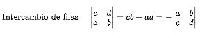

3.Sistema de ecuaciones (Metodos alternativos)
3.1 INTRODUCCION
El método más importante de resolver sistemas de ecuaciones lineales es el Método de Eliminación,
las tres razones más importantes ventajas de este método son:
- 1.Sencillez: Es un método muy sencillo y directo
- 2.Universalidad: El método entrega las soluciones de cualquier sistema de ecuaciones lineales sin restricción
- 3.Eficiencia: Es un método muy rápido y eficiente.
Sirven solo para sistemas de ecuaciones con igual número de ecuaciones que de incógnitas, los llamados sistemas cuadrados,
o sea solo resuelven sistemas con solución única. Esto hace que estos métodos sean muy poco usados
La Matriz Inversa un nuevo enfoque
Un enfoque diferente al método de eliminación de Gauss para resolver un sistema de ecuaciones lineales comienza con representar un
sistema de ecuaciones no usando la matriz aumentada sino representando el sistema de la forma matricia
. Por ejemplo consideremos el siguiente sistema de 2x2:
Recuerde que multiplicar una matriz por un vector se puede hacer por columnas y entonces:
y entonces Este sistema lo puede expresar de la siguiente manera:
Si queremos resolverlo se nos puede ocurrir pensar en "despejar" x el vector de incógnitas y entonces simplemente:
"Pasar la matriz A a dividir y así queda  despejada" o sea:
despejada" o sea:
Entonces:
En el caso del sistema de 2x2 que planteamos al comienzo la respuesta es afirmativa, la matriz mágica es:
Miremos:
y entonces la solución del sistema es
3.2 MATRIZ INVERSA GAUSS-JORDAN
Matrices de 2x2
Inversa de Matrices de 3x3
El Método más sencillo de encontrar la inversa de una Matriz, si esta existe, es el de Gauss-Jordan,
lo invito a explorar el siguiente applet donde se explica como encontrar la Matriz Inversa.
3.3 DETERMINANTES
Los determinantes están mucho más lejos del centro del álgebra lineal de lo que estaban hace cien años.
¡Las matemáticas siguen cambiando de dirección! Después de todo, un simple número puede decir tanto sobre una matriz.
De todos modos, es extraordinario cuánto puede hacer este número. Un punto de vista es: el determinante constituye una
fórmula "explícita" para cada elemento de . Esta fórmula no modifica la manera de realizar los cálculos;
incluso el determinante en sí se encuentra por eliminación. De hecho, la eliminación puede considerarse como la manera más eficiente de sustituir los elementos de una matriz de n por n en la fórmula.
Lo que hace la fórmula es mostrar cómo depende de los
elementos de A, y la forma en que varía cuando los elementos cambian.
Propiedades del Determinante
Consisten en una lista bastante larga. Por fortuna, cada regla es fácil de encontrar, e incluso más fácil de ilustrar, mediante un ejemplo de 2 por 2.
En consecuencia, se comprobará que la conocida definición en el caso de 2 por 2:
1. El determinante de la matriz identidad es 1.
2. El determinante cambia de signo cuando se intercambian dos renglones.

3. El determinante depende linealmente del primer renglón. Suponga que A, B, C son iguales a partir del segundo renglón, y que el renglón l de A es una
combinación lineal de los primeros renglones de B y C. Entonces la regla establece: det A es la misma combinación que det B y det C. Las combinaciones lineales
implican dos operaciones: sumar vectores y multiplicar por escalares. Por consiguiente, esta regla puede separarse en dos partes:
Este hecho prácticamente duplica la lista de propiedades, ya que cada regla aplicada a los renglones puede aplicarse ahora a las columnas: el detenninante
cambia de signo cuando se intercambian dos columnas, dos columnas iguales (o una columna de ceros) producen un determinante cero, y el determinante depende
linealmente de cada columna individual. La demostración consiste justamente en trasponer la matriz y trabajar con los renglones. Considero que es hora de guardar
silencio y declarar que la lista está completa. Sólo queda encontrar una fórmula definitiva para el determinante, y aplicarla.
3.4 MATRIZ INVERSA COFACTORES
Actividad Profesor Leopoldo Aranda (Inversa de Una Matriz por CoFactores)
El Método de Cofactores es quizá el método menos popular y más dispendioso de encontrar la matriz inversa, lo invito a explorar el siguiente applet donde se
explica como encontrar la Matriz Inversa para un sistema de ecuaciones de 3x3.
3.5 METODO DE CRAMER
El método de Cramer es un método sencillo y atractivo de resolver sistemas de ecuaciones que conducen a solución única., en el siguiente applet puede encontrar
una explicación interactiva de este método: